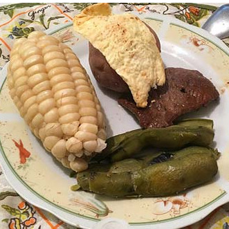

Plato Paceño

Ingredientes
- Choclo cocido
- Habas verdes cocidas
- Papas cocidas con cáscara
- Queso fresco
- Llajwa (salsa picante boliviana)
Preparación
Para el fricasé, cocina carne de cerdo en agua con sal hasta que esté tierna. En otra olla, prepara un sofrito con cebolla, ajo y ají amarillo molido, cocinando hasta que la cebolla esté transparente. Agrega la carne cocida al sofrito y mezcla bien. Incorpora caldo de la cocción de la carne y añade mote cocido. Cocina a fuego lento hasta que los sabores se integren. Sirve caliente, acompañado de papas cocidas y decorado con perejil picado.